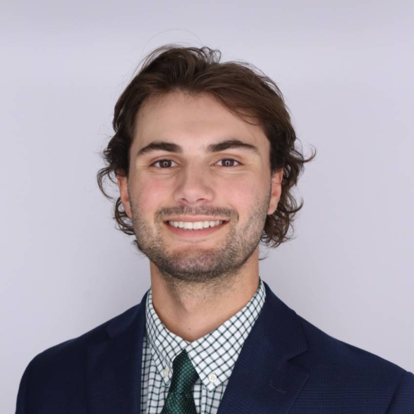

Maddy is an Architectural Intern with The SLAM Collaborative’s Iowa City office. During her time there, she has worked primarily in healthcare related projects and studies ranging from research laboratories to clinical spaces. Currently going into her 5th year at Iowa State’s architecture program, she has work in several projects including multipurpose housing, community engagement facilities, and entertainment design. Going into this leadership position, Maddy has an interest in community outreach and sustainable design, as well as an interest in the organizational aspects of a project and the coordination of various specializations within a collaborative work environment.

Nathan is an Architectural Intern with The SLAM Collaborative’s Glastonbury office. Over the course of two summer internships, he has contributed primarily to athletics focused projects, gaining experience in designing complex, high performance environments. Currently entering his 5th year at the University of Miami’s architecture program, he has worked on a variety of academic projects ranging from community focused developments to sustainably designed educational facilities. With a strong interest in design that brings people together and enhances everyday experiences, he is especially drawn to project leadership and fostering effective collaboration across disciplines within the architectural process.
Maddy is an Architectural Intern with The SLAM Collaborative’s Atlanta office. During her time there, she has worked primarily in healthcare related projects. She is currently going into her 4th year at SCAD's architecture program.
Emily is a Summer 2025 NOMA Future Face Fellow architectural intern working at the SLAM Collaborative Boston office where she has worked on healthcare projects. As she is entering her 5th year at Pratt Insitute's Architecture program she has worked on projects including public and private housing projects: reinviting the (NYCHA) Housing urban design; the passive house ice box challenge; a bookstore with vegetation and water vessels adapting to flood levels in Venice; an outdoor fresh food market, in addition to library and pool additions. Emily is interested in pedestrian friendly designs, designing for the public, and sustainability.

Eveleen is this year's recipient of the Kyle C. Slocum Memorial Scholarship working at The SLAM Collaborative’s Glastonbury office. During her time, she has worked primarily on AI research and education projects. Currently entering her final year at UConn’s Landscape Architecture program, she has worked on various projects including public and private housing redevelopments, rehabilitation facilities, stormwater management plans, and community center designs. Eveleen has an interest in community-based projects and ethical design research. After graduating she hopes to continue her education and pursue a Masters in Landscape Architecture.

to be added

Autumn is currently an intern in the interiors department at The SLAM Collaborative’s Glastonbury office. She is pursuing a BS in interior design, entering her 4th year, and a MS in sustainable design both at Thomas Jefferson University. Her academic work spans a wide range of project types, including community centers, retail environments, restaurants, mentoring facilities, and after-school centers. Most recently, Autumn studied abroad in Copenhagen, Denmark, where she deepened her understanding of environmentally conscious design principles and broadened her global design perspective. While working with SLAM she has contributed to a variety of projects, primarily in education, both lower and higher.

to be added